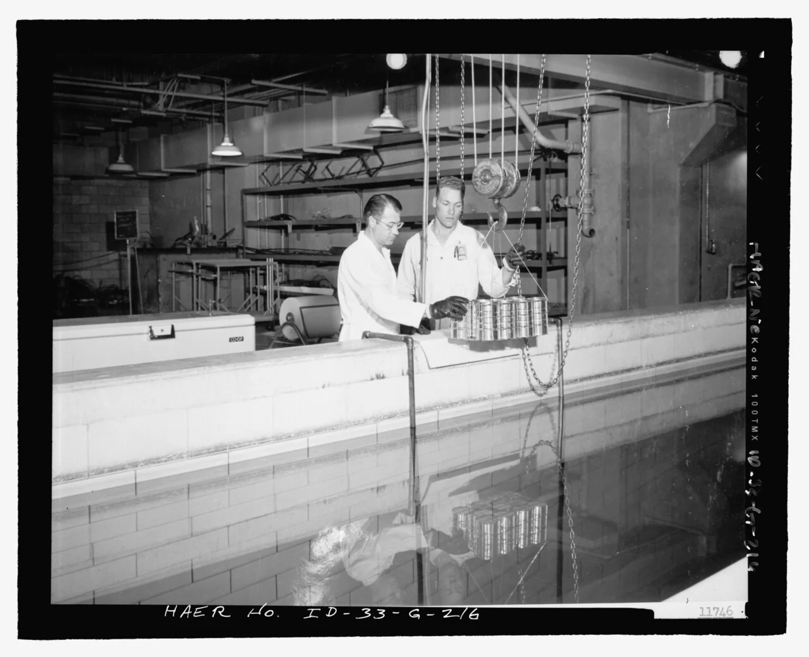
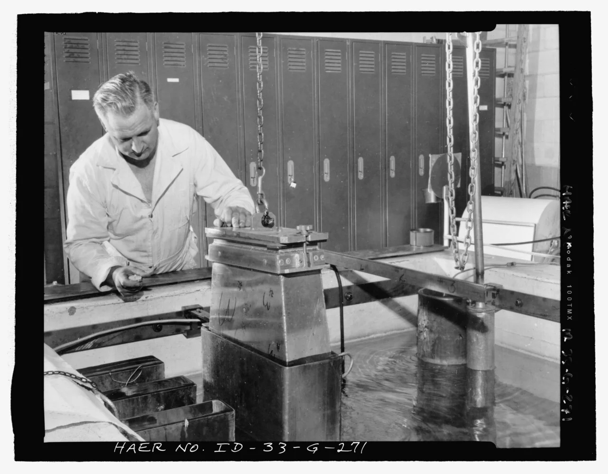
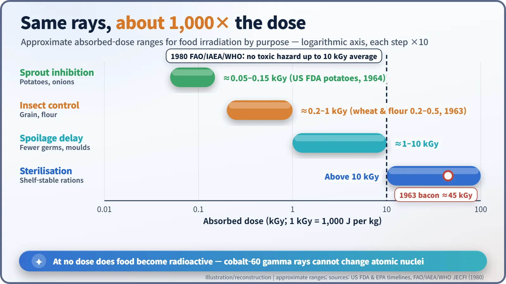
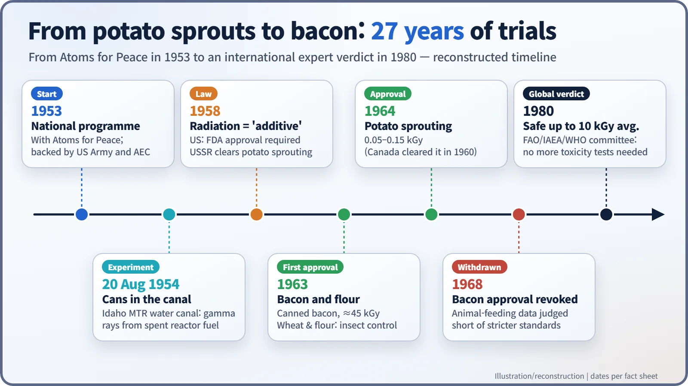

Nuclear History · 197
The Bacon That Was Approved, Then Taken Back — The Early History of Food Irradiation
Potatoes and tinned bacon went into reactor water canals; the science said irradiated food is not radioactive, but regulators and consumers asked for more.
In the 1950s, Atoms for Peace turned reactor gamma rays toward a homely goal: keeping food from spoiling. The US Army and the Atomic Energy Commission lowered cans and potatoes into reactor water canals, and in 1963 the FDA approved irradiated canned bacon, only to withdraw that approval in 1968 because the safety data were judged insufficient. Irradiated food does not become radioactive, but winning public trust proved a separate task.
Approved in 1963, withdrawn in 1968
In 1963 the US Food and Drug Administration approved an unusual kind of bacon. It was sealed in cans and dosed with gamma rays from cobalt-60 until every bacterium inside was dead, so it could sit on a shelf for a long time without a refrigerator. It was the first irradiated food ever cleared for sale in the United States. Five years later, in 1968, the FDA withdrew that approval. Had the bacon suddenly become dangerous? To answer that, we need to go back fifteen years. [2]
Field rations and spare gamma rays
The idea of killing germs in food with radiation is older than most people think. Patents for it were granted in the United States and Britain in the early 1900s. The catch was the radiation source: the only one available was radium, scarce and very expensive. [5]
Nuclear reactors changed that. From 1950 the US Atomic Energy Commission (AEC) ran a coordinated research programme on preserving food with ionising radiation and supplied spent fuel rods from reactors as gamma sources. With President Eisenhower's Atoms for Peace initiative of 1953, the United States launched a National Food Irradiation Program, sponsored by the Army and the AEC. An IAEA Bulletin article later noted that food preservation by radiation had been part of Atoms for Peace "since its inception in 1953". [1] [2]
Each partner had its own reason. The Army wanted meat rations that could survive for years at the front without refrigeration or freezers. The AEC wanted to show a peaceful use for the gamma radiation its reactors produced.
Cans on the bottom of the pool

The first experiments were wonderfully low-tech. On 20 August 1954, in the basement of the Materials Testing Reactor (MTR) at the National Reactor Testing Station in Idaho, two employees of the operating contractor, Phillips Petroleum, hung a bundle of food cans from a chain and lowered it into a water canal. Spent MTR fuel lay on the bottom of the canal, and its gamma rays passed straight through the tin into the food. The water acted as a shield, so people could work safely right above it. In February 1956 the same trick was used on potatoes, lowered in a metal canister into a tube in the canal.

Spent fuel had a drawback, though: it was hard to deliver an exact dose with it. Purpose-made cobalt-60 sources soon became the standard, and in the early 1960s the Army's work moved to a new laboratory in Natick, Massachusetts. [5]
A gentle dose for sprouts, a heavy one for germs
How much radiation is used depends entirely on the goal. Absorbed dose is measured in grays; one kilogray (kGy) means each kilogram of food absorbs 1,000 joules. Holding back potato sprouts takes only 0.05–0.15 kGy. Killing insects in wheat flour takes about 0.2–0.5 kGy. Sterilising canned bacon so that nothing survives took around 45 kGy, hundreds of times more. [2]

Now for the most common misunderstanding: irradiated food does not become radioactive. The gamma rays from cobalt-60 simply do not carry enough energy to turn atomic nuclei in the food into radioactive ones. It is like a suitcase that has gone through an airport X-ray scanner. What the radiation does is break the DNA of microbes and insects so they cannot multiply, and slow cell division in the "eyes" of a potato. [1]
When radiation became a "food additive"
The deciding factor turned out to be the law. In 1958 Congress amended the Federal Food, Drug, and Cosmetic Act and included sources of radiation used in food processing in the definition of a "food additive". Irradiation adds no substance at all; it is a process. But under the new rule, anyone who wanted to sell irradiated food first had to prove its safety and win FDA approval. That same year the Soviet Union authorised irradiation to stop potatoes sprouting, and Canada followed with potatoes in 1960. [4] [6]
The United States approved bacon and wheat and wheat flour in 1963, then potatoes in 1964. But when the Army asked in 1966 for approval of irradiated ham as well, scrutiny tightened. On 18 July 1968 Daniel Banes, the FDA's associate commissioner for science, told Congress's Joint Committee on Atomic Energy that the Army's studies had a number of significant deficiencies in experimental design. That year the FDA declined to approve the ham and withdrew the bacon approval as well: the animal-feeding data from the 1950s did not meet the stricter standards now being applied. The point is worth stressing. The bacon was not shown to be harmful; the evidence was judged insufficient. [2] [3]
Science answers, consumers ask
After that, the centre of gravity moved to international collaboration. In 1980 a joint expert committee of the UN Food and Agriculture Organization (FAO), the International Atomic Energy Agency (IAEA) and the World Health Organization (WHO) concluded that "the irradiation of any food commodity up to an overall average dose of 10 kGy presents no toxicological hazard; hence, toxicological testing of foods so treated is no longer required." [5]
A scientific conclusion is not the same thing as public trust, however. Unease about the very word "radiation", questions from consumer groups about nutrient losses and long-term effects, and arguments over how such food should be labelled all continued. The green "Radura" logo, created in the Netherlands in the early 1980s and adopted internationally, was one product of that compromise. From potato sprouts to bacon that was approved and then withdrawn, this early experiment showed that proving safety and earning public confidence are two separate jobs. [4]
